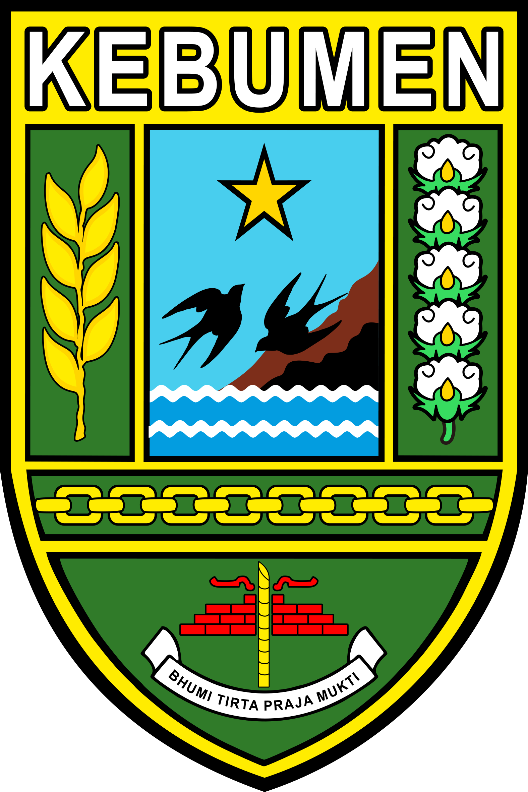

<head>
  <link rel="stylesheet" href="https://cdnjs.cloudflare.com/ajax/libs/font-awesome/6.5.2/css/all.min.css" />
</head>

<footer class="site-footer">
    <div class="footer-section footer-left">
      
      <div>
        <h3>Pemerintah Desa Logandu</h3>
        <p>Jalan Raya Logandu-Karanggayam</p>
        <p>Desa Logandu, Kecamatan Karanggayam, Kabupaten Kebumen</p>
        <p>Provinsi Jawa Tengah, 54365</p>
      </div>
    </div>

    <!-- Kanan: Hubungi Kami -->
    <div class="footer-section contact-section">
      <h3>Hubungi Kami</h3>
      <div class="icon-footer">
        <i class="fa-solid fa-phone"></i>
        <span>082150208664</span>
      </div>
      <div class="icon-footer">
        <i class="fa-solid fa-envelope"></i>
        <span>logandu@kukarkab.go.id</span>
      </div>
      <div class="social-media-links" style="margin-top: 15px">
        <a href="https://www.instagram.com/logandu_official?igsh=MWxlM2xteThkbDJyNg==" target="_blank">
    <i class="fa-brands fa-instagram"></i></a>
        <a href="https://youtube.com/channelanda" target="_blank">
    <i class="fa-brands fa-youtube"></i></a>
         <a href="https://www.facebook.com/share/1StnJJ8bwN/" target="_blank">
    <i class="fa-brands fa-facebook"></i>
  </a>
      </div>
    </div>
  </div>
</footer>
